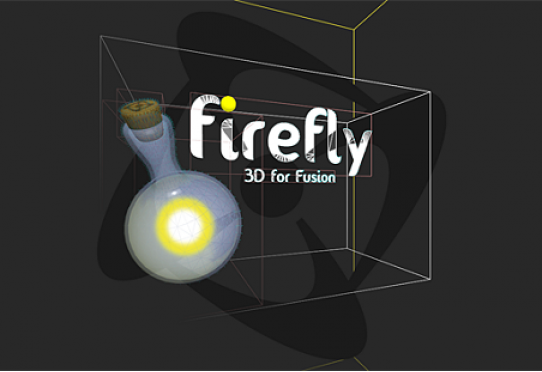

Exporters
Exporters Extensions
Extensions Interface
Interface Chowdren
Chowdren ClickStore
ClickStore Bug Tracker
Bug Tracker| |
This is an archive. |
| See the new ClickWiki at https://clickwiki.net. This version is just an archive for the purposes of migrating content to the new structure. |
Firefly
|  | |
| Author | |
| Status | Released, In Development |
| Release Date | November 30th, 2016 |
| Available for | |
| Supported Runtimes | |
| License | Paid |
| Attributes | |
| Download | |
|---|---|
| Includes Examples | Yes |
| Includes Help Files | Yes |
| Links | |
| Alternates | See 3D Techniques |
{kind=link}
Contents
- 1 Firefly - 3D for Fusion
- 1.1 The objects
- 1.1.1 Firefly Engine
- 1.1.2 Firefly Node - Camera
- 1.1.3 Firefly 2D Text
- 1.1.4 Firefly Image
- 1.1.5 Firefly Material Cache
- 1.1.6 Firefly Movement
- 1.1.7 Firefly Node - Animated Mesh
- 1.1.8 Firefly Node - Billboard
- 1.1.9 Firefly Node - Dummy
- 1.1.10 Firefly Node - Light
- 1.1.11 Firefly Node - Particle System
- 1.1.12 Firefly Node - Primitive
- 1.1.13 Firefly Node - Static Mesh
- 1.1.14 Firefly Node - Terrain
- 1.1.15 Firefly Node - Text
- 1.1.16 Firefly Node - Water
- 1.1.17 Firefly Sky
- 1.1 The objects
- 2 Basic Node Conditions and Actions
- 2.1 Shared Conditions
- 2.2 Shared Actions
Firefly - 3D for Fusion
A brand new set of objects to power your Clickteam Fusion 2.5 Standard or Developer with the ability to leverage the event editor to build your own 3D games and apps. Now you can build First Person Shooters, Third Person Adventures, 3D Puzzle Games and more. All using the same kind of Properties, Actions, Conditions and Expressions methods you use for 2D projects in Fusion.
The objects
Firefly Engine
The Firefly Engine object does almost all the work within these set of extensions. First, you should add one to the frame and then resize it to cover the frame. The area covered by this extension dictates the resolution of your 3D scene.
Firefly Node - Camera
The Firefly Node Camera object is necessary to draw anything to the frame. It works similarly to how the Engine object works, except the area covered by the Camera object dictates where to draw the scene to (through the camera). Through this system, split-screen effects can be achieved, but usually the Engine object and your singular Camera will both be at the same point on the frame and both be of the same size.
Firefly 2D Text
The Firefly 2D Text object puts 2D text inside your 3D world useful for things like names above heads and other User Interface information
Firefly Image
The Firefly Image object puts images inside your 3D world useful for backdrops for all that User Interface information you have.
Firefly Material Cache
The Firefly Material Cache object represents and acts as an array of Materials. A Material has an Index that it resides at within a Material Cache object, and it can also have a name. Most node objects require one or more materials to render something other than a gray mass in the scene.
Firefly Movement
The Firefly Movement object is one of the most important objects in the Firefly set as it helps you move all your other nodes around.
Firefly Node - Animated Mesh
With the Firefly Animated Mesh node you can insert an animated mesh into the scene. An Animated Mesh is animated across a number of Frames by calculating the position, scale, and rotation of the mesh's Joints using each one's collection of keyframes across those Frames.
So, an Animated Mesh might have many Joints, and each Joint can have many Key Frames of a Position and/or Scale and/or Rotation type. When the animation takes place, it calculates what Position, Scale, and Rotation each Joint should be set to at a given frame by working out each difference between the last and next Key Frame.
Firefly Node - Billboard
The Firefly Node - Billboard object is like a 3D sprite: A 2D element, which always looks to the camera. It is usually used for explosions, fire, lens flares, particles and things like that.
Firefly Node - Dummy
The Firefly Node - Dummy object isn't really an object at all, in fact it isn't anything and you will never see it in through the Node Camera, but it's incredibly useful for holding data. For example you could have players mark an area in your world and put a dummy node there and use its values in your calculations.
Firefly Node - Light
The Firefly Node - Light object places various light sources such as spot lights or directional lights in your scene, Lights are often needed to brighten up a scene. Any Material (from the Material Cache object) that has its 'Lighting' setting set to true/on (which it is by default) means that it requires light to be rendered in some color other than black.
Firefly Node - Particle System
With the Firefly Node - Particle System you can insert a particle emitter into the scene. A Particle System node can be one of these types: Point, Box, Sphere, Animated Mesh Node, Cylinder, Mesh, Ring. These types describe the shape of the emitter. What is actually emitted is similar to a Billboard node object.
A Particle System Node also can one or more Effectors. An Affecter is something located at a X,Y,Z position within the scene and will affect particles generated by the node object in different ways. The different types of Effectors are 'Attraction', 'Fade-Out', 'Gravity', 'Rotation', 'Scale'.
Firefly Node - Primitive
The Firefly Node - Primitive object is capable of very quickly creating a mesh in the shape of standard objects such as cubes, spheres, arrows, tubes cones, cylinders and planes.
Firefly Node - Static Mesh
The Firefly Node - Static Mesh object isn't static as in not able to move its just static as in not containing any animations, most of your 3d objects will be static meshes.
Firefly Node - Terrain
The Firefly Node - Terrain object is capable of very quickly loading terrains and updating the indices at runtime to enable viewing very large terrains. It uses a CLOD (Continuous Level of Detail) algorithm which updates the indices for each patch based on a LOD (Level of Detail) which is determined based on a patch's distance from the camera.
Firefly Node - Text
The Firefly Node Text object lets you insert 2D text within the 3D scene. It works similar to the Billboard object in that it will always face the camera and the size of the text as it appears is not dependent on how close the object is to the camera.
Firefly Node - Water
This Firefly Node Water object for rendering an animated water surface mesh. Looks really good when a Material with Transparent Reflection is used.
Firefly Sky
The Firefly Sky object is not quite a node object in that you can only have one in the scene, and it cannot be moved around. you can however choose to have a skydome or a skybox which will allow your players to feel that the world is massive around them.
Basic Node Conditions and Actions
Many of the node objects share similar conditions, actions and expressions. Learn what those ACE's are here.
Is added to Firefly Engine
Has this object been added to an Firefly Engine instance?
Node Properties
Has Parent Node
Has this object been set a parent node?
Position
Compare (X,Y or Z) of a Position
Using the expression editor compare on the three three dimensional position values to a expression.
Visibility
Is visible
Is the object set to be visible or not?
Is truly visible
Will return true if the object and all of its possible parent nodes are visible also.
Is Drawing Debug Data
Returns whether Debug Data is set to draw or not.
Uses collisions
Returns whether Use Collisions has been turned on or not.
Has collided with a node
Is a true condition that will happen when this node object’s Collision.
Radius collides with another node object’s mesh
No info available, please add some!
Has collided with a particular node
Enter Fixed Value of Firefly Node that the object may collide with Is a true condition that will happen when this node object’s Collision Radius collides with another node object’s mesh that has the Fixed Value equal to the inputted parameter.
Add to Firefly Engine
Select an object
This action adds the object to the Firefly Engine object instance specified in the parameter. This is necessary so that the engine knows about the Node object.
Remove from Firefly Engine
Select an object
This action removes the object from the Firefly Engine object instance specified in the parameter.
Node Properties
Set Parent Node
Enter Fixed Value of an Firefly Node (0 for none)
This action sets another Firefly – Node object (any type of Node) as the parent of this object. Which then means its Position, Rotation, Scale, etc settings are relative to its parent.
Position, Rotation, Scale
Position(X, Y or Z)
Move the node along either the X, Y or Z planes using the expression editor.
Rotation(X, Y or Z)
Rotate the node along the X, Y or Z axes
Scale(X, Y or Z)
Scale the node in either of the 3 dimensions
Visibility
This boolean setting denotes whether the object is visible in the scene or not.
Automatic Culling
Determines if objects outside of camera view are drawn or not
Box
Camera bounding box draws invisible lines to the object bounding box, if any lines connect then the object is drawn.
Frustum Box
Draws an invisible bounding Box and checks if the camera can see any part of it.
Frustum Sphere
Draws an invisible bounding sphere and checks if the camera can see any part of it
Off
Never hides meshes out of sight, this can have a huge negative impact on larger scenes.
Set
Allows you to set which mode the Automatic culling uses during runtime.
Draw Debug Data
Off
Turns off debug data
On
Turns on debug data
Set
Sets if debug data like bounding boxes should be drawn (0 off 1 on)
Collisions
Collisions work like this: When node A (that Uses Collisions) might collide with node B (that Uses Collisions, it compares node A’s Collision Radius and Translation against node B’s mesh. If they collide, it is that node A has collided with node B, not the other way around. If node A’s collision Radius is equal to 0, then it cannot collide with node B. For node B to collide with A, it has to compare B’s Radius and Translation against A’s mesh.
Use Collisions
If this is set true, then this Node can collide and be collided into by other colliding nodes.
Radius
If this node Uses Collisions, then this is the radius of the space that it takes up around its position when it collides into Meshes of other nodes (that use collisions also).
Translation
If this node Uses Collisions, then this is an offset from its position that it uses to calculate when it collides into Meshes of other nodes (that use collisions also).